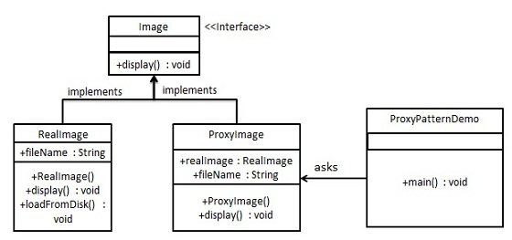

在代理模式（Proxy Pattern）中，一个类代表另一个类的功能。这种类型的设计模式属于结构型模式。
在代理模式中，我们创建具有现有对象的对象，以便向外界提供功能接口。
介绍
意图：为其他对象提供一种代理以控制对这个对象的访问。
主要解决：在直接访问对象时带来的问题，比如说：要访问的对象在远程的机器上。在面向对象系统中，有些对象由于某些原因（比如对象创建开销很大，或者某些操作需要安全控制，或者需要进程外的访问），直接访问会给使用者或者系统结构带来很多麻烦，我们可以在访问此对象时加上一个对此对象的访问层。
何时使用：想在访问一个类时做一些控制。
如何解决：增加中间层。
关键代码：实现与被代理类组合。
应用实例： 1、Windows 里面的快捷方式。 2、猪八戒去找高翠兰结果是孙悟空变的，可以这样理解：把高翠兰的外貌抽象出来，高翠兰本人和孙悟空都实现了这个接口，猪八戒访问高翠兰的时候看不出来这个是孙悟空，所以说孙悟空是高翠兰代理类。 3、买火车票不一定在火车站买，也可以去代售点。 4、一张支票或银行存单是账户中资金的代理。支票在市场交易中用来代替现金，并提供对签发人账号上资金的控制。 5、spring aop。
优点： 1、职责清晰。 2、高扩展性。 3、智能化。
缺点： 1、由于在客户端和真实主题之间增加了代理对象，因此有些类型的代理模式可能会造成请求的处理速度变慢。 2、实现代理模式需要额外的工作，有些代理模式的实现非常复杂。
使用场景：按职责来划分，通常有以下使用场景： 1、远程代理。 2、虚拟代理。 3、Copy-on-Write 代理。 4、保护（Protect or Access）代理。 5、Cache代理。 6、防火墙（Firewall）代理。 7、同步化（Synchronization）代理。 8、智能引用（Smart Reference）代理。
注意事项： 1、和适配器模式的区别：适配器模式主要改变所考虑对象的接口，而代理模式不能改变所代理类的接口。 2、和装饰器模式的区别：装饰器模式为了增强功能，而代理模式是为了加以控制。
实现
我们将创建一个 Image 接口和实现了 Image 接口的实体类。ProxyImage 是一个代理类，减少 RealImage 对象加载的内存占用。
ProxyPatternDemo，我们的演示类使用 ProxyImage 来获取要加载的 Image 对象，并按照需求进行显示。

步骤 1
创建一个接口。
Image.java
public interface Image {
void display();
}
步骤 2
创建实现接口的实体类。
RealImage.java
public class RealImage implements Image {
private String fileName;
public RealImage(String fileName){
this.fileName = fileName;
loadFromDisk(fileName);
}
@Override
public void display() {
System.out.println("Displaying " + fileName);
}
private void loadFromDisk(String fileName){
System.out.println("Loading " + fileName);
}
}
ProxyImage.java
public class ProxyImage implements Image{
private RealImage realImage;
private String fileName;
public ProxyImage(String fileName){
this.fileName = fileName;
}
@Override
public void display() {
if(realImage == null){
realImage = new RealImage(fileName);
}
realImage.display();
}
}
步骤 3
当被请求时，使用 ProxyImage 来获取 RealImage 类的对象。
ProxyPatternDemo.java
public class ProxyPatternDemo {
public static void main(String[] args) {
Image image = new ProxyImage("test_10mb.jpg");
// 图像将从磁盘加载
image.display();
System.out.println("");
// 图像不需要从磁盘加载
image.display();
}
}
步骤 4
执行程序，输出结果：
Loading test_10mb.jpg
Displaying test_10mb.jpg
Displaying test_10mb.jpg